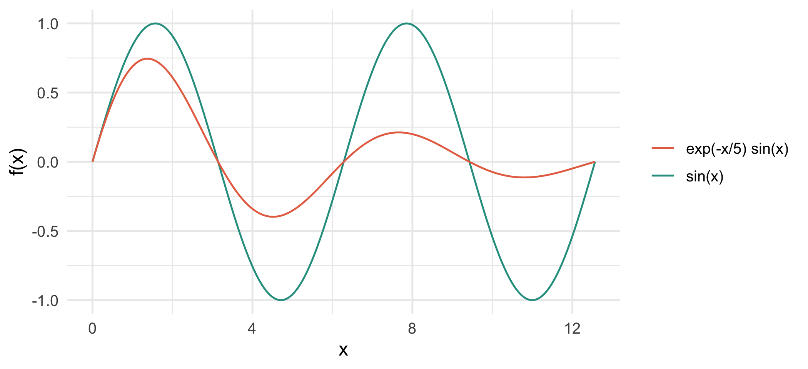

library(ggplot2)Fundamentos de R
Minicurso de R · Módulo 0
R
fundamentos
vectores
matrices
Objetos, vectores, matrices, ayuda, paquetes y buenas prácticas de estilo para empezar a programar en R.
Objetivos de aprendizaje
Al terminar este cuaderno podrás:
- Usar R como calculadora y guardar resultados en objetos.
- Crear, indexar y operar vectores, incluyendo comparaciones lógicas y valores faltantes.
- Crear y manipular matrices (subconjuntos y aritmética).
- Buscar ayuda e instalar paquetes.
- Escribir código legible siguiendo una guía de estilo.
1. R como calculadora
R evalúa expresiones y muestra el resultado. Los operadores aritméticos son +, -, *, /, ^ (potencia), %% (residuo) y %/% (división entera).
3 + 8[1] 116 * 98[1] 588sqrt(200)[1] 14.1421417 %% 5 # residuo de 17 entre 5[1] 217 %/% 5 # división entera[1] 32^10[1] 1024Para guardar un resultado se usa el operador de asignación <- (atajo en RStudio: Alt + -):
radio <- 4
area <- pi * radio^2
area[1] 50.26548
TipConsejo
En R, = también asigna, pero por convención se reserva <- para asignar objetos y = para pasar argumentos en las funciones. Así el código es más fácil de leer.
2. Teoría: los vectores son la base
En R casi todo es un vector: una colección ordenada de elementos del mismo tipo. Un número suelto es un vector de longitud 1. Los tipos atómicos más usados son:
| Tipo | class() |
Ejemplo |
|---|---|---|
| Numérico | numeric |
3.14, 81 |
| Entero | integer |
5L |
| Texto | character |
"alef" |
| Lógico | logical |
TRUE, FALSE |
Se crean con la función c() (de combine):
v_num <- c(3, 9, 81)
v_text <- c("alef", "bet", "gimel") # el texto siempre va entre comillas
v_bool <- c(TRUE, FALSE, TRUE)
class(v_num)[1] "numeric"class(v_text)[1] "character"class(v_bool)[1] "logical"length(v_num)[1] 3Si mezclas tipos, R los convierte al más general (coerción): lógico → numérico → texto.
c(1, TRUE, FALSE) # lógico pasa a numérico[1] 1 1 0c(1, "a", TRUE) # todo pasa a texto[1] "1" "a" "TRUE"Un vector puede tener nombres, lo que lo vuelve parecido a un diccionario:
prendas <- c(zapatos = "mocasines", gorra = "Yankees", camisa = "blanca")
prendas zapatos gorra camisa
"mocasines" "Yankees" "blanca" names(prendas)[1] "zapatos" "gorra" "camisa" prendas["gorra"] gorra
"Yankees" Operaciones vectorizadas
Las operaciones se aplican elemento a elemento, sin necesidad de bucles. Esta idea, llamada vectorización, es la que hace que R sea rápido y conciso:
x <- 1:10 # secuencia del 1 al 10
x * 2 [1] 2 4 6 8 10 12 14 16 18 20x^2 [1] 1 4 9 16 25 36 49 64 81 100sum(x); mean(x); sd(x)[1] 55[1] 5.5[1] 3.02765seq(0, 1, by = 0.25)[1] 0.00 0.25 0.50 0.75 1.00rep(c("a", "b"), times = 3)[1] "a" "b" "a" "b" "a" "b"x <- seq(0, 4 * pi, length.out = 200)
datos <- data.frame(x = x, seno = sin(x), amortiguada = exp(-x / 5) * sin(x))
ggplot(datos, aes(x)) +
geom_line(aes(y = seno, colour = "sin(x)")) +
geom_line(aes(y = amortiguada, colour = "exp(-x/5) sin(x)")) +
scale_colour_manual(values = c("#e76f51", "#2a9d8f"), name = NULL) +
labs(x = "x", y = "f(x)") +
theme_minimal(base_size = 12)
Indexación
Para extraer elementos se usan corchetes [ ] con tres opciones: posiciones, un vector lógico o nombres.
animales <- c("Elefante", "Jirafa", "Burro", "Caballo", "Cebra")
animales[2] # una posición[1] "Jirafa"animales[c(1, 3)] # varias posiciones[1] "Elefante" "Burro" animales[-1] # todo menos el primero[1] "Jirafa" "Burro" "Caballo" "Cebra" animales[2:4] # un rango[1] "Jirafa" "Burro" "Caballo"animales[nchar(animales) > 5] # con una condición lógica[1] "Elefante" "Jirafa" "Caballo" 3. Comparaciones y lógica
Las comparaciones (<, >, <=, >=, ==, !=) devuelven vectores lógicos. Se combinan con & (y), | (o) y ! (no).
edades <- c(12, 25, 37, 8, 64, 19)
edades > 18[1] FALSE TRUE TRUE FALSE TRUE TRUEedades > 18 & edades < 40[1] FALSE TRUE TRUE FALSE FALSE TRUEedades[edades > 18][1] 25 37 64 19which(edades > 18) # posiciones donde se cumple[1] 2 3 5 6any(edades > 60); all(edades > 5)[1] TRUE[1] TRUEsum(edades > 18) # TRUE cuenta como 1[1] 4
WarningError frecuente
Para comparar igualdad se usa ==, no =. Además, con números decimales evita ==: 0.1 + 0.2 == 0.3 es FALSE por errores de redondeo. Usa isTRUE(all.equal(0.1 + 0.2, 0.3)).
Valores faltantes
Un dato ausente se representa con NA. Casi cualquier operación con NA da NA, así que hay que decirle a R cómo tratarlo:
temperatura <- c(21.5, 23.1, NA, 22.8, NA, 24.0)
mean(temperatura) # NA[1] NAmean(temperatura, na.rm = TRUE) # ignora los faltantes[1] 22.85is.na(temperatura)[1] FALSE FALSE TRUE FALSE TRUE FALSEsum(is.na(temperatura)) # cuántos faltan[1] 24. Matrices
Una matriz es un vector con dos dimensiones (filas y columnas) y elementos del mismo tipo.
M <- matrix(1:12, nrow = 3, ncol = 4)
M [,1] [,2] [,3] [,4]
[1,] 1 4 7 10
[2,] 2 5 8 11
[3,] 3 6 9 12M_fila <- matrix(1:12, nrow = 3, byrow = TRUE) # se llena por filas
M_fila [,1] [,2] [,3] [,4]
[1,] 1 2 3 4
[2,] 5 6 7 8
[3,] 9 10 11 12dim(M); nrow(M); ncol(M)[1] 3 4[1] 3[1] 4Se pueden nombrar filas y columnas y luego indexar por posición o por nombre con [fila, columna]:
precipitacion <- matrix(c(120, 98, 45, 60, 150, 110, 70, 80, 130, 105, 55, 65),
nrow = 3, byrow = TRUE,
dimnames = list(estacion = c("Norte", "Centro", "Sur"),
trimestre = c("T1", "T2", "T3", "T4")))
precipitacion trimestre
estacion T1 T2 T3 T4
Norte 120 98 45 60
Centro 150 110 70 80
Sur 130 105 55 65precipitacion["Centro", "T2"] # un valor[1] 110precipitacion["Sur", ] # una fila completa T1 T2 T3 T4
130 105 55 65 precipitacion[, c("T1", "T4")] # dos columnas trimestre
estacion T1 T4
Norte 120 60
Centro 150 80
Sur 130 65precipitacion[precipitacion > 100] # valores mayores a 100[1] 120 150 130 110 105Las sumas y promedios por fila o columna se calculan con rowSums(), colMeans() y afines, o con apply():
rowSums(precipitacion) Norte Centro Sur
323 410 355 colMeans(precipitacion) T1 T2 T3 T4
133.33333 104.33333 56.66667 68.33333 apply(precipitacion, MARGIN = 1, FUN = max) # máximo por fila Norte Centro Sur
120 150 130 Aritmética de matrices
Los operadores +, -, * actúan elemento a elemento. El producto matricial se escribe con %*%.
A <- matrix(c(2, 1, 1, 3), 2)
B <- matrix(c(1, 0, 4, 2), 2)
A * B # elemento a elemento [,1] [,2]
[1,] 2 4
[2,] 0 6A %*% B # producto matricial [,1] [,2]
[1,] 2 10
[2,] 1 10t(A) # traspuesta [,1] [,2]
[1,] 2 1
[2,] 1 3solve(A) # inversa [,1] [,2]
[1,] 0.6 -0.2
[2,] -0.2 0.4A %*% solve(A) # da la identidad [,1] [,2]
[1,] 1.000000e+00 0
[2,] -5.551115e-17 1diag(2) # matriz identidad [,1] [,2]
[1,] 1 0
[2,] 0 1det(A) # determinante[1] 5Un sistema de ecuaciones \(A\mathbf{x} = \mathbf{b}\) se resuelve con solve(A, b):
b <- c(5, 10)
solve(A, b)[1] 1 35. Ayuda, paquetes y estilo
Cómo pedir ayuda
?mean # ayuda de una función
help("mean") # equivalente
??"regresión" # búsqueda por palabra clave
example(mean) # ejecuta los ejemplos de la ayuda
vignette(package = "dplyr") # guías largas de un paqueteCuando algo falle, copia el mensaje de error completo y búscalo en internet (ayuda de R, Stack Overflow o Posit Community).
Instalar y cargar paquetes
Un paquete se instala una sola vez con install.packages() y se carga en cada sesión con library():
install.packages("tidyverse") # una vez por computador
library(tidyverse) # en cada sesión
dplyr::filter(mtcars, cyl == 4) # usar una función sin cargar el paquete
WarningNunca dejes
install.packages() dentro de un script compartido
Instalar paquetes en cada ejecución es lento y modifica el computador de quien lo corre. Documéntalos al inicio o usa renv para registrar las versiones de tu proyecto.
Guía de estilo
Un código legible se entiende meses después. Estas convenciones (basadas en la guía tidyverse) bastan para empezar:
| Recomendado | Evitar |
|---|---|
datos_clima (minúsculas y guion bajo) |
DatosClima, datos.clima |
x <- 5 |
x=5 |
mean(x, na.rm = TRUE) |
mean(x,na.rm=TRUE) |
| Líneas de menos de 80 caracteres | Líneas larguísimas |
| Comentarios que explican el porqué | Comentarios que repiten el código |
| Rutas relativas dentro de un proyecto | setwd("C:/Users/yo/...") |
set.seed() cuando se usa azar |
Resultados que cambian sin control |
Sobre las rutas: crea un proyecto de RStudio (.Rproj) por cada análisis; así el directorio de trabajo es la carpeta del proyecto y el código funciona en cualquier computador. Evita también rm(list = ls()) al inicio de los scripts: no limpia todo (no reinicia los paquetes cargados) y borra el trabajo de quien lo ejecute. Mejor reinicia la sesión (Ctrl/Cmd + Shift + F10).
Ejercicios
- Vectores. Crea el vector
edades <- c(12, 25, 37, 8, 64, 19). Calcula el promedio, selecciona las edades mayores que el promedio y cuenta cuántas son. - Lógica. Dado
x <- c(5, NA, 12, 7, NA, 3), calcula la media sin los faltantes y reemplaza losNApor esa media. - Matrices. Construye una matriz de 3 × 3 con los números del 1 al 9 llenada por filas. Extrae la diagonal y calcula la suma de cada columna.
- Sistema lineal. Resuelve \(2x + y = 5\), \(x + 3y = 10\) con
solve()y comprueba la solución multiplicando.
NoteSoluciones sugeridas
edades <- c(12, 25, 37, 8, 64, 19)
promedio <- mean(edades)
edades[edades > promedio][1] 37 64sum(edades > promedio)[1] 2x <- c(5, NA, 12, 7, NA, 3)
x[is.na(x)] <- mean(x, na.rm = TRUE)
x[1] 5.00 6.75 12.00 7.00 6.75 3.00M3 <- matrix(1:9, 3, byrow = TRUE)
diag(M3)[1] 1 5 9colSums(M3)[1] 12 15 18A <- matrix(c(2, 1, 1, 3), 2, byrow = TRUE)
sol <- solve(A, c(5, 10))
sol[1] 1 3A %*% sol [,1]
[1,] 5
[2,] 10Para profundizar
- Wickham, H. y Grolemund, G. (2017). R for Data Science. O’Reilly. r4ds.hadley.nz.
- Wickham, H. (2019). Advanced R (2.ª ed.). adv-r.hadley.nz, capítulo sobre vectores.
- Guía de estilo de tidyverse: style.tidyverse.org.